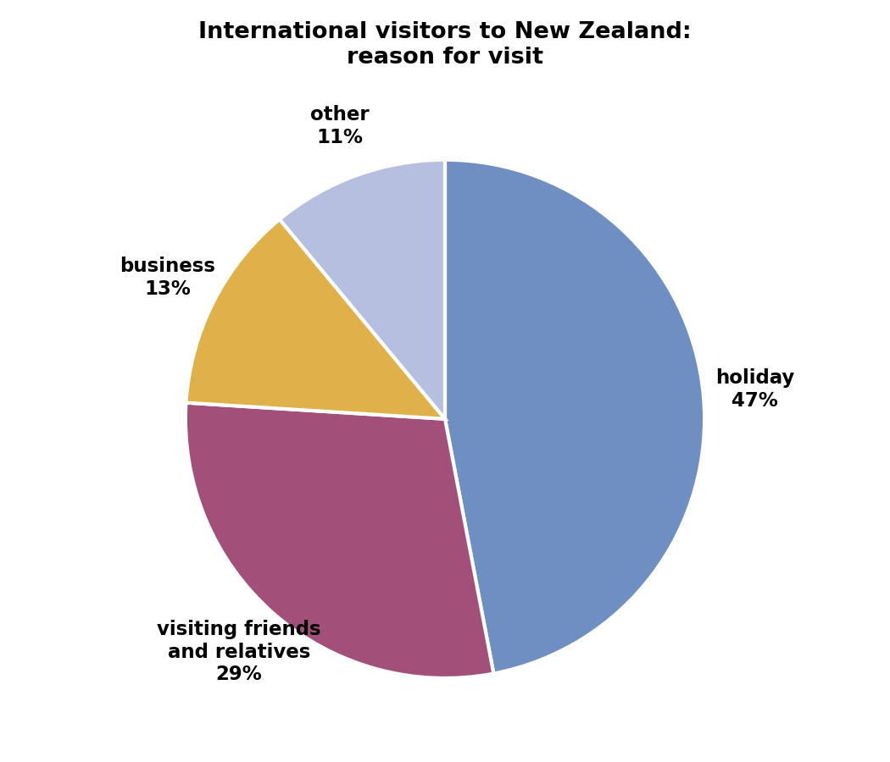
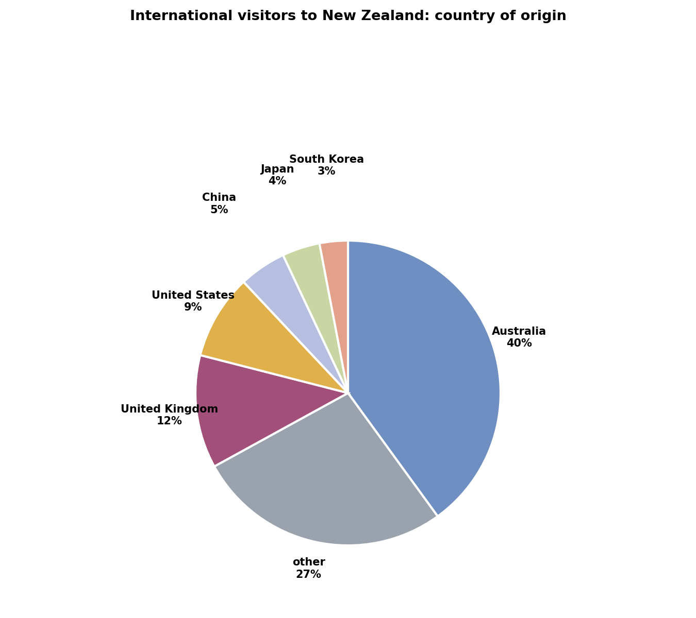
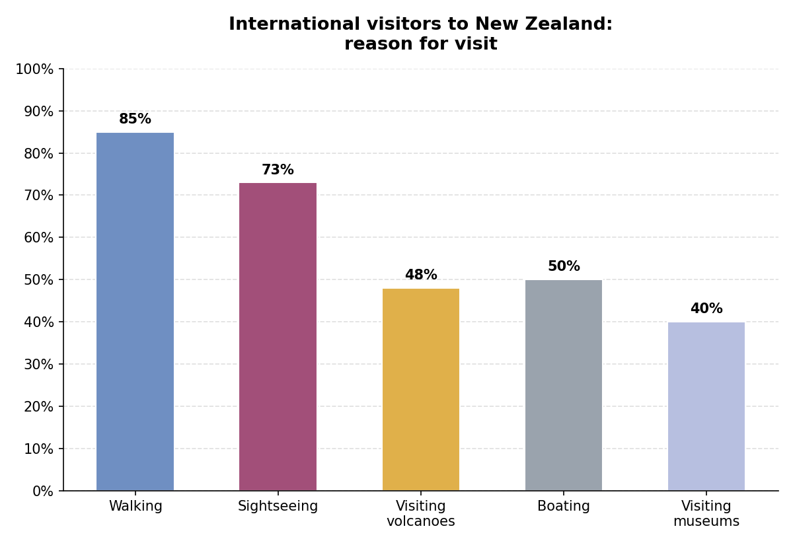
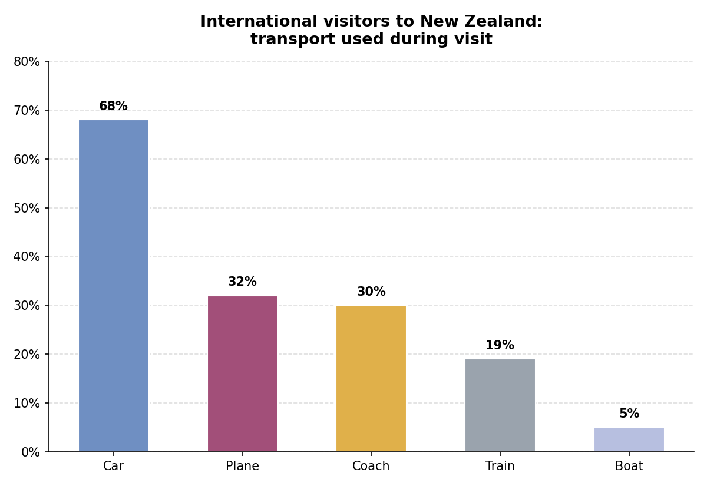

Key grammar — present simple and present continuous
These four lines all come from a Speaking Part 1 answer. Decide which tense each underlined verb is.
Quyidagi to'rtta gap Speaking Part 1 javobidan olingan. Har bir tagiga chizilgan fe'l qaysi zamonda ekanini aniqlang.
1. At the moment, I'm studying English as well.
2. I come from Muttrah in Oman.
3. I find the traffic very unpleasant.
4. Young people are leaving the village.
Now complete the table
Use the four extracts above to work out the missing tense names.
Yuqoridagi to'rtta misoldan foydalanib, yetishmayotgan zamon nomlarini toping.
| name of tense | use | example |
|---|---|---|
| present continuous | to talk about something happening now | At the moment, I'm studying English as well. |
| to express what someone feels or thinks | I find the traffic very unpleasant. | |
| to talk about something which is changing | Young people are leaving the village. | |
| to talk about something which is always true | I come from Muttrah in Oman. |
Grammar practice
Complete these sentences by putting the verb in brackets into the present simple or present continuous.
Qavs ichidagi fe'lni present simple yoki present continuous shakliga qo'yib, gaplarni to'ldiring.
1. Hassan lives (live) in Qatar, but right now he (visit) friends in Bahrain.
2. I (study) geology because I (want) to work in the oil industry.
3. He (not like) living in Manchester because it (rain) too much.
4. Transport in my city (improve) because the government (build) more roads.
5. People in my area (do) a lot of sport in their free time because they (like) to keep fit.
Common mistakes with present simple and continuous
IELTS candidates often make mistakes with the present simple and present continuous. Find and correct the mistake in each sentence, then reveal the answers to check.
IELTS nomzodlari present simple va present continuous bilan ko'pincha xato qiladi. Har bir gapdagi xatoni toping va tuzating, so'ngra javoblarni ko'ring.
1. At the present time, most people are thinking think money is important for their lifestyle. (example — already corrected)
2. I think most children are influenced by their parents while they grow up.
3. Lots of people argue that international tourism bringing us advantages.
4. Most countries are encourage tourism.
5. Nowadays, more and more cities around the world become bigger and bigger.
6. People in most cities are believing that traffic is one of the most important problems.
2. No mistake — this sentence is already correct (a general truth using present simple).
3. Lots of people argue that international tourism is bringing us advantages.
4. Most countries are encouraging tourism.
5. Nowadays, more and more cities around the world are becoming bigger and bigger.
6. People in most cities believe that traffic is one of the most important problems.
Writing Task 1 — pie chart (reason for visit)
Exam information: For Writing Task 1, you write a summary of information from graphs, tables, charts or diagrams. You should spend about 20 minutes on this task.

Discuss the questions below.
1. What is the main reason for visiting New Zealand?
2. What percentage of visitors go to New Zealand to see friends and relatives?
3. What does the figure 13% refer to?
4. What is meant by other on the chart?
5. In general, do more people visit New Zealand for work or pleasure?
Complete the short summary with phrases from the box.
The chart shows why people from other countries
1. .
2. , 47 percent, go there on holiday.
Twenty-nine percent visit New Zealand in order to 3. . 4. go there on business, and just 11 percent visit for 5. .
Overall, the majority of visitors go 6. , not for work.
Writing Task 1 — pie chart (country of origin)

Discuss the questions below.
1. What does the chart give information about?
2. What nationality is the largest group of visitors?
3. What percentage of visitors come from the United Kingdom, and what percentage from the United States?
UK:
US:
4. What percentage of visitors comes from the three countries in East Asia which are mentioned?
5. Are there visitors from countries not mentioned on the chart?
6. What do visitors from Australia, the United Kingdom and the United States have in common?
This summary of the pie chart contains false facts. Rewrite it to correct the information.
Ushbu xulosa noto'g'ri faktlarni o'z ichiga oladi. Ma'lumotni to'g'irlab, qayta yozing.
The chart gives information about the number of people travelling to New Zealand where people who travel to New Zealand come from. (example — already corrected) The percentage of visitors from Australia is the highest, at 40 percent. The third largest group comes from the United Kingdom, and 9 percent go to the United States. The East Asian countries, China, Japan and South Korea, send 5 percent, 4 percent and 3 percent each. However, 27 percent come from other European countries. Overall, more than 70 percent of visitors come from English-speaking countries.
The chart gives information about where people who travel to New Zealand come from. The percentage of visitors from Australia is the highest, at 40 percent. The second largest group comes from the United Kingdom, and 9 percent go to the United States. The East Asian countries, China, Japan and South Korea, send 5 percent, 4 percent and 3 percent each. However, 27 percent come from other, unspecified countries. Overall, more than 60 percent of visitors come from English-speaking countries.
Note for Alan: I'm confident about the two changes in bold above (the UK is the second-largest named group after Australia, and Australia + UK + US together make roughly 61%, not "more than 70%"). I also removed "European" since the chart doesn't specify where the "other" 27% come from. I could only find these — please double check against the original textbook answer key in case there's a fifth intended error I'm missing.
Percent vs. percentage
IELTS candidates often confuse percent and percentage. Look at this sentence, then answer the questions below.
IELTS nomzodlari ko'pincha "percent" va "percentage" so'zlarini adashtirib yuboradi.
The percentage of visitors from Australia is the highest, at 40 percent.
1. Which word (percent or percentage) is used with a number?
2. Which word is used with the?
Each of these sentences contains one mistake. Find and correct it.
1. The percent percentage of teenagers who ride bicycles is higher than for any other age group. (example — already corrected)
2. In the cities, the number of people living alone is 28 percentage.
3. The percent of people over 50 is the lowest in this group.
4. Just over 50 percentage of the city's inhabitants are female.
5. The ten percent of females have a university qualification.
6. As can be seen from the table, 60 percent population live in cities.
7. Australia's share of the Japanese tourist market has increased from 2 percentage to nearly 5 percentage.
8. This chart shows the percent people attending the cinema in Australia.
2. In the cities, the number of people living alone is 28 percent.
3. The percentage of people over 50 is the lowest in this group.
4. Just over 50 percent of the city's inhabitants are female.
5. Ten percent of females have a university qualification. (remove "The")
6. As can be seen from the table, 60 percent of the population lives in cities.
7. Australia's share of the Japanese tourist market has increased from 2 percent to nearly 5 percent.
8. This chart shows the percentage of people attending the cinema in Australia.
Writing Task 1 — bar charts
Complete the summary below in your own words, then compare your ideas with the model.
Quyidagi xulosani o'z so'zlaringiz bilan to'ldiring, so'ngra fikrlaringizni namuna bilan solishtiring.

The chart shows 1. .
The most popular activity is walking, which 2. of people on holiday do. Seventy-five percent of visitors 3. and 4. go to see volcanoes.
Another popular activity is boating, which 5. of holidaymakers do. Just over 6. of visitors also like 7. .
Overall, 8. enjoy doing outdoor activities more than indoor activities.
The chart shows the activities that visitors to New Zealand take part in. The most popular activity is walking, which the vast majority (85 percent) of people on holiday do. Seventy-five percent of visitors go sightseeing and almost half go to see volcanoes. Another popular activity is boating, which half of holidaymakers do. Just over 40 percent of visitors also like visiting museums. Overall, the majority of visitors enjoy doing outdoor activities more than indoor activities.
Now look at this chart and discuss the questions below.

1. What does the chart provide information about?
2. What is the commonest means of transport? What percentage of visitors use it?
Means of transport:
Percentage:
3. Which two means of transport are used almost the same amount? What percentage of visitors use them?
4. What is the fourth most popular means of transport? What percentage of visitors use it?
Means of transport:
Percentage:
5. Which means of transport is used least? What percentage of visitors use it?
Means of transport:
Percentage:
6. Overall, which is more popular: private transport or public transport?
Writing Task 1 report
Now write your own full response. Use the language and ideas from the tasks above to help you.
Endi o'zingizning to'liq javobingizni yozing. Yordam uchun yuqoridagi til va g'oyalardan foydalaning.
The chart below shows the transport used by international visitors during their visit to New Zealand. Summarise the information by selecting and reporting the main features, and make comparisons where relevant. Write at least 150 words.
Sample answer
Model response, with useful comparison language marked.
The bar chart illustrates the different types of transport used by international tourists during their stay in New Zealand.
Overall, private transport was clearly more popular than public transport, with the car being the most widely used method by a considerable margin. It is also clear that air travel and coach travel were used by a similar proportion of visitors, while the train and the boat were used far less frequently.
The car was used by 68 percent of visitors, making it by far the most popular option, more than double the figure for the next most common method. In terms of air travel, 32 percent of visitors used a plane to get around, which was only slightly higher than the 30 percent who travelled by coach.
The train was used by considerably fewer visitors, at just 19 percent, followed by the boat, which was the least popular method of all, at a mere 5 percent. Overall, the picture that emerges is one of a strong preference for independent, road-based travel over public or water transport.
Spelling — making nouns plural
IELTS candidates often make spelling mistakes when writing nouns in the plural. Write the plural form of these words.
IELTS nomzodlari ko'plik shaklidagi otlarni yozishda ko'pincha imlo xatolariga yo'l qo'yishadi. Quyidagi so'zlarning ko'plik shaklini yozing.
1. visitor
2. boss
3. boy
4. foot
5. man
6. match
7. party
8. wife
Write the plural form of each of these words.
1. person
2. child
3. country
4. city
5. life
6. family
7. watch
8. potato
9. activity
10. crash
Day 3 complete! 🎉
All 10 tasks done. Come back tomorrow for the next day.